/Work/Pixelbin/App
PixelBin App
How Do You Put an AI
Creative Studio in
Someone's Pocket?

How do you put an entire
AI creative studio on a phone?
The Evolution
Three Versions,
Three Identities
The app wasn't designed once. It was redesigned three times — each version a different answer to "what is this app for?" V2 added credits, batch mode, and templates. V3 expanded into an ecosystem with AR, tutorials, and a light theme. V4 inverted everything: the Home screen became a prompt bar, and tools were nested behind an "AI Tools" tab.
Each version gained users and risked losing others. The V4 decision to make the prompt bar primary was a bet that the future user base thinks differently than the current one.

V2 · The Platform
Credits + batch
V3 · The Ecosystem
AR + tutorials + light theme
V4 · The AI
Prompt-firstThe Constraint
4x Fewer
Interaction Zones
A MacBook screen fits roughly 2,074 usable interaction zones. An iPhone fits 723. That's a 4x reduction in interactive density — and it changes everything about how AI tools must be designed.
Desktop AI tools rely on hover tooltips, keyboard shortcuts, multi-window workflows, and sidebar panels. On mobile, 75% of interactions are thumb-driven. The upper-left corner of the screen — where most desktop apps put their primary toolbar — is the hardest spot to reach with one hand.
The average mobile session is 72 seconds. Desktop users sit for 150 seconds. Mobile users create in bursts while commuting, waiting in line, or between meetings. Every workflow that takes longer than a minute needs to survive an interruption.
Three constraints that
shaped every screen
All metrics from Microsoft Clarity · 8,069 sessions · Last 200 days
scroll depth. Users reach the bottom — the thumb zone design works. Every tool lives in the bottom third of the screen.

Clarity · Scroll depth trend
active time per session. Every workflow survives interruption. Every generation runs in background.

Clarity · Active time trend
rage clicks. One interaction pattern for everything. Bottom sheet for every tool. Zero frustration.

Clarity · Rage clicks → 0%
Don't shrink the desktop.
Rethink the interaction.
How Do You Explain
AI in 3 Swipes?
Onboarding
The Problem
Most users have never used an AI creative tool on mobile. They don't know what's possible. The onboarding has to communicate three capabilities — image generation, batch editing, and video creation — before the user even creates an account.


The Design Decision
Three swipeable cards, each showing one capability with a single visual. No feature lists. No tutorials. Just three promises: "Generate images," "Batch edit," "Make videos." The user understands what the app does before signing up.
What Should the
First Screen Show?
Home
The Problem
The home screen is the most important design decision in the app. It determines whether the user thinks of this as an "AI tool" or as an "AI creative partner." The prompt bar, the tool cards, the suggestion pills, and the model selector all compete for attention on one screen.
Alternatives We Considered
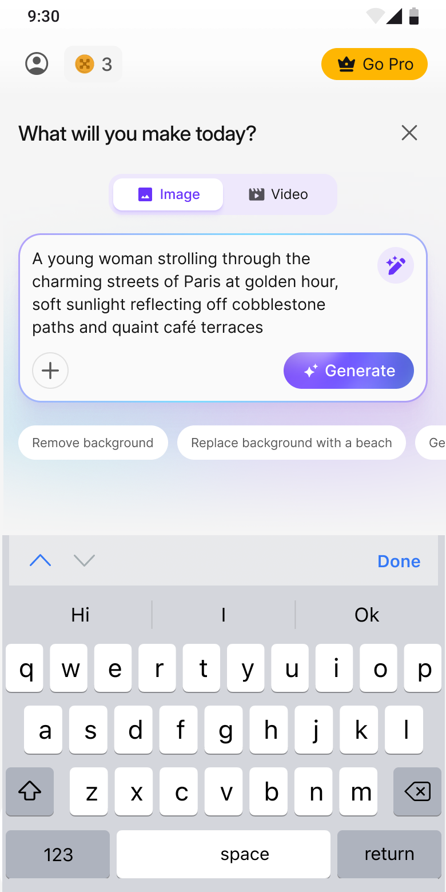
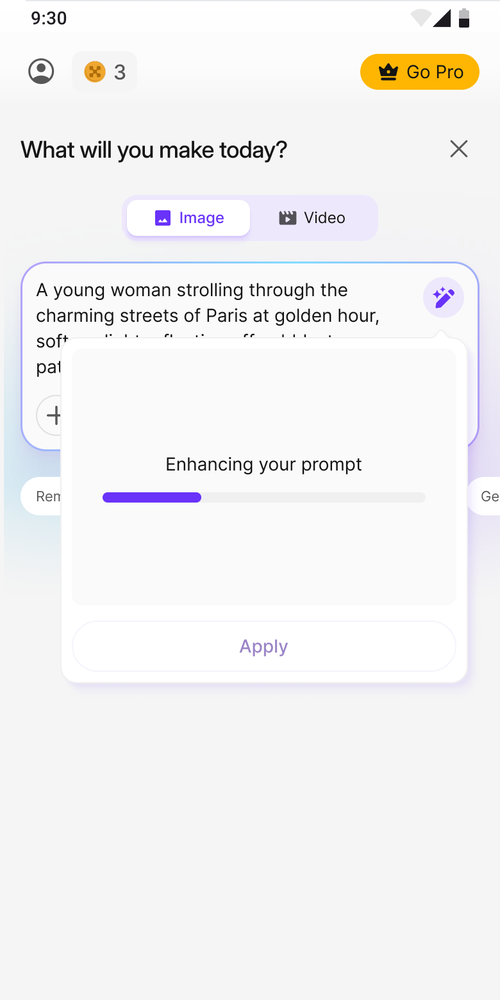
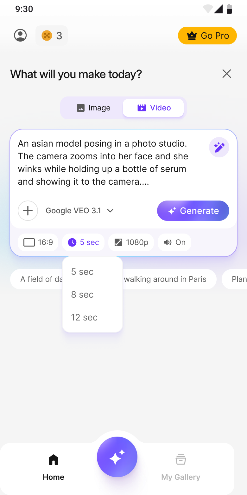
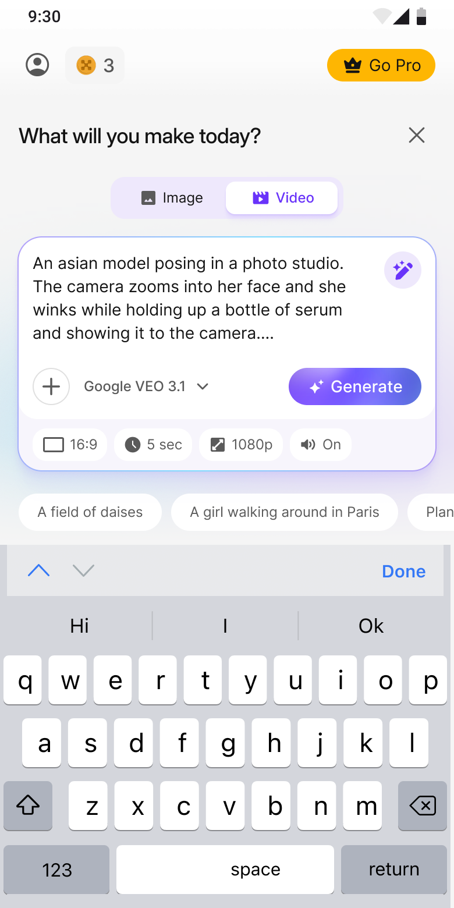
The Design Decision
The home screen is prompt-first — not tool-first. The primary interaction is typing what you want, not browsing a menu of features. Tool cards exist below as secondary entry points. The "Enhance prompt" feature automatically improves the user's input before generation, solving the prompt-quality problem for beginners.
What the Recordings Showed
We Stopped
Designing for
Comparison
We watched 50 session recordings. Users weren't comparing plans. They were deciding whether to pay at all. The decision had already been made before they reached the pricing screen — during the creation flow.
The old screen treated pricing as a comparison problem — 5 options, feature matrices, checkmarks and crosses. But recordings showed two behaviours: scroll past everything and hit back, or tap the first option and continue.
So we redesigned for conviction, not comparison.
Before — Choose Your Plan

After — Get Pro

5 choices with feature comparison. Free Trial shown as "Current Plan." Generic CTA. Users hesitated, left.
3 choices with Monthly pre-selected. Free Trial removed. Hero image. Specific CTA. Weekly as safety net.
How Do You Organise
10 AI Tools Without
Overwhelming People?
AI Tools
The Problem
The app has 10 distinct AI tools — from image generation to background removal to video creation. Showing them all equally would overwhelm. Hiding them would make the app feel limited. The design needs to surface the right tool at the right moment.
The Design Decision
The four most-used tools (Video Generator, Image Generator, AI Editor, Batch Editor) appear as hero cards at the top. The remaining six (Background Remover, Upscaler, Watermark Remover, BG Generator, Resize, Adjust) sit in a secondary grid below. The hierarchy communicates: "start here, explore more later."
How Do You Fit
6 Editing Tools on
a 6-Inch Screen?
AI Image Editor
The Problem
The AI Image Editor has six distinct tools — Prompt editing, Smart Select, Brush Select, Upscale, Watermark Removal, and Adjust. On desktop, these live in a sidebar. On mobile, there's no sidebar. Every tool needs to be reachable with one thumb without hiding the image being edited.


The Design Decision
Every tool slides up as a bottom sheet — the mobile-native pattern for contextual panels. The image stays visible above. The tool controls sit in the thumb zone below. When processing, the bottom sheet shows progress. When done, it shows the result with Apply/Cancel. Six tools, one interaction pattern, zero learning curve between them.

Chat-Based Editing
Upload · Describe · Iterate · Every edit in the thumb zone

The System
One Pattern,
Six Tools
The slideshow above shows 8 tabs: Entry, Prompt, Smart Select, Brush, Upscale, Watermark, Adjust, Resize. Every single tab uses the same interaction: a bottom sheet slides up from the thumb zone. The image stays visible above. The controls sit below.
This isn't a coincidence. It's a system. One component — the bottom sheet — serves every tool in the editor. The user learns the interaction once on their first edit. By their sixth tool, the pattern is invisible. They're not thinking about the UI anymore. They're thinking about their image.
NN/g research confirms: progressive disclosure works best at exactly two levels. Level one: the toolbar showing which tools exist. Level two: the bottom sheet showing the tool's controls. No level three. No nested menus. No hidden settings.
Two tools tested the limits of the pattern. Smart Select packs four states into a single bottom sheet — region selection, prompt input, processing indicator, and result preview — which risks overwhelming what should be a simple panel. Brush Select needed a half-height sheet rather than the standard height, because the user has to see the image while painting a selection mask. The pattern held, but in both cases the sheet had to flex: Smart Select uses scrollable content within a fixed-height panel, and Brush Select reduces the sheet to a single slider row so the canvas stays visible. A universal pattern is only universal if you design the exceptions into it.
The Differentiator
Two Ways
to Select
Most mobile AI editors apply effects to the entire image. PixelBin lets you select specific regions — then describe what you want to change in natural language. Two selection modes serve different needs.
Smart Select uses AI to identify objects in the image. Tap a person, a product, a shadow — the AI understands what you're selecting. Then type what you want: "remove the background," "change the colour to red," "make it brighter." This is Generative Fill for mobile — no other mobile AI app combines semantic object detection with open-ended natural language editing.
Brush Select gives manual control. Paint over any area with an adjustable brush, then describe the change. When AI detection isn't precise enough — a specific texture, a partial region, an abstract area — the brush handles it.
Both tools use the same bottom-sheet pattern. Both feed into the same prompt interface. The user chooses precision (brush) or speed (smart select), but the editing workflow is identical from that point forward.
Smart Select — AI identifies objects, you describe the change
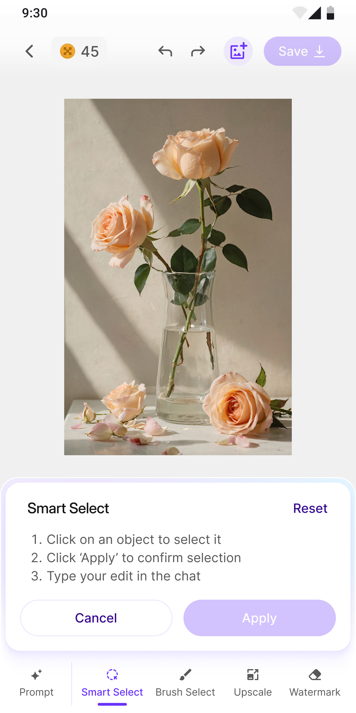


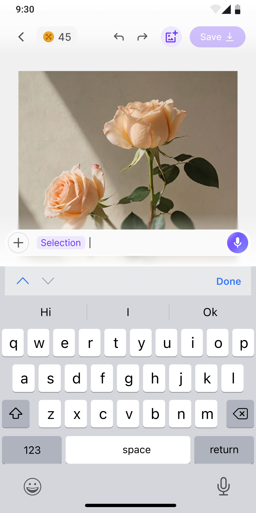

Brush Select — manual precision, same prompt workflow

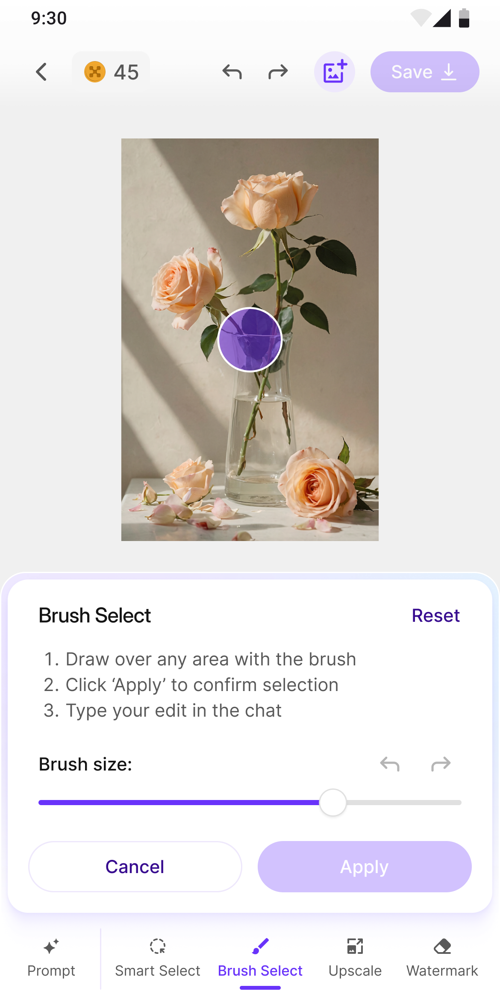
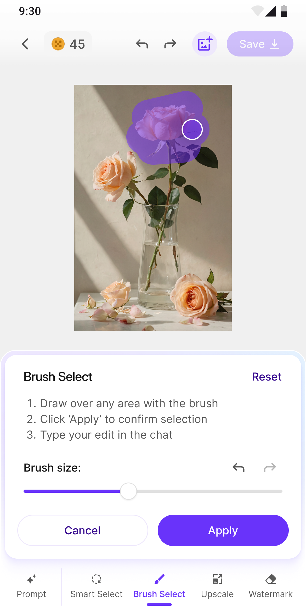
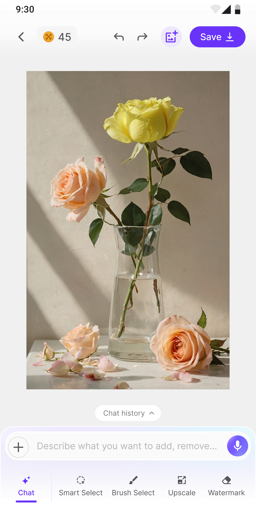
The Utility Layer
Clean It.
Crop It.
Ship It.
Not every edit involves AI generation. Watermark removal and platform-aware resizing are utility tasks — the kind of work that used to require a separate app. PixelBin keeps them inside the same editor, using the same bottom-sheet pattern.
Watermark removal runs in two modes. Auto mode detects and removes watermarks with a single tap — no selection needed. Manual mode lets users brush over specific marks when automatic detection misses one. Both modes use the same toolbar, the same processing indicator, and the same success confirmation.
Resize goes beyond basic cropping. Pre-built templates for social media platforms (Instagram, Facebook, Twitter) and e-commerce marketplaces sit alongside standard aspect ratios. The user edits once, then exports to every platform they need — without leaving the app or opening a separate resize tool.
Watermark Removal — auto detection or manual brush

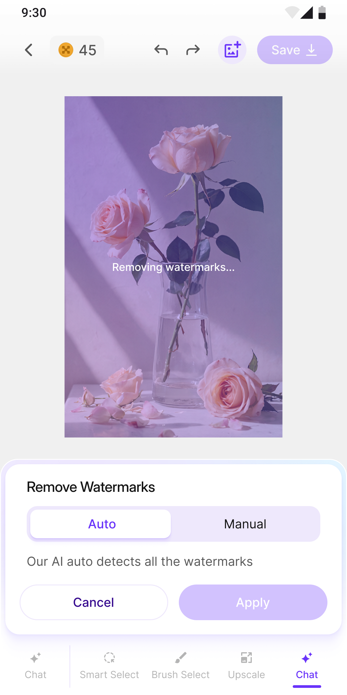

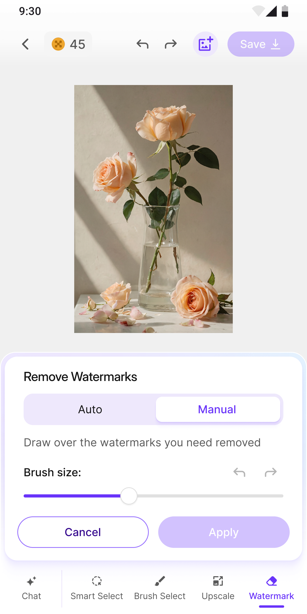
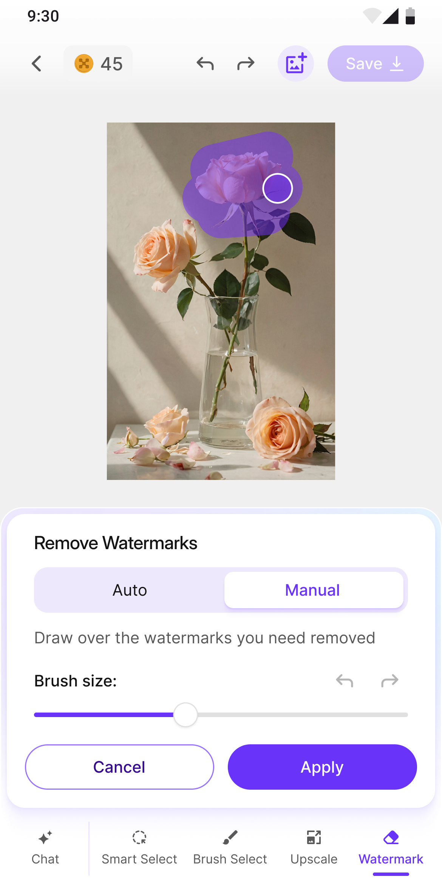
Resize — aspect ratios, social media, and marketplace presets


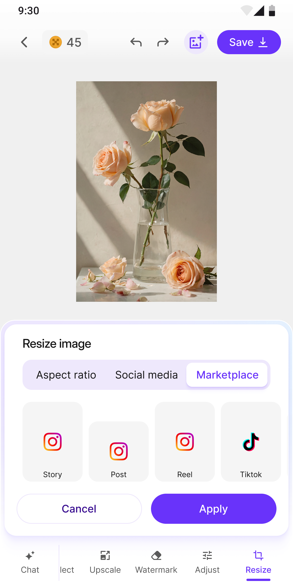
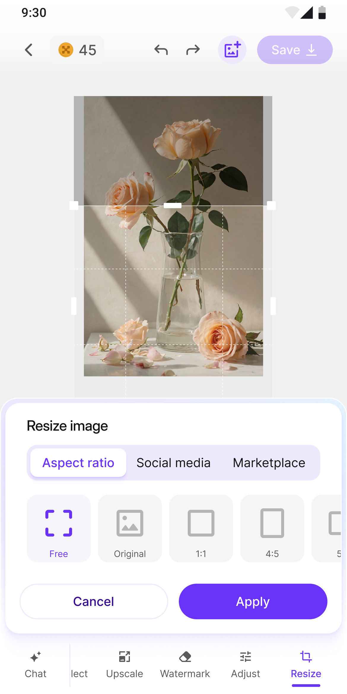
Can You Generate
a Video While Waiting
for Coffee?
Video Generator
The Problem
Video generation takes 2-5 minutes. On desktop, the user switches tabs. On mobile, they put the phone in their pocket. The design has to handle long processing times without losing the user — and show clear progress so they know it's working.

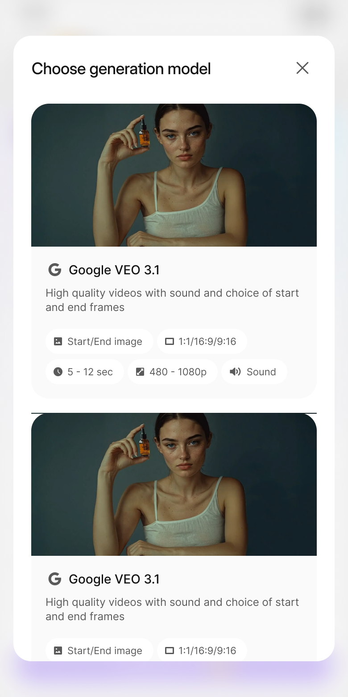


The Design Decision
Video generation takes 2-5 minutes. The average mobile session is 72 seconds. That arithmetic forced the most consequential design decision in the app: every generation had to run in the background with push notifications, because the user will leave before it finishes. The generation screen shows estimated time remaining, a progress bar, the original prompt, and all settings as tags — not because users watch the progress, but because they need to verify the right job is running before they pocket the phone. The playful empty state ("Generate new video" with a magic hat) sets expectations before the first generation.
No image needed — generate start frames from text

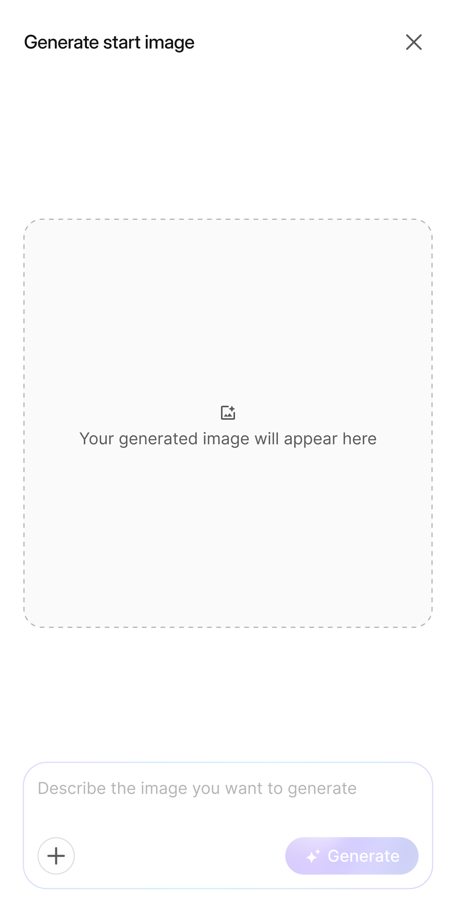


How Do You Batch
Edit on a Phone?
Batch Editor
The Problem
Batch editing — applying the same transformation to multiple images — is inherently a desktop task. Multiple images need to be visible, selected, and processed simultaneously. On mobile, the screen can show maybe 4-6 images at once. The design has to make batch operations feel natural on a small screen.


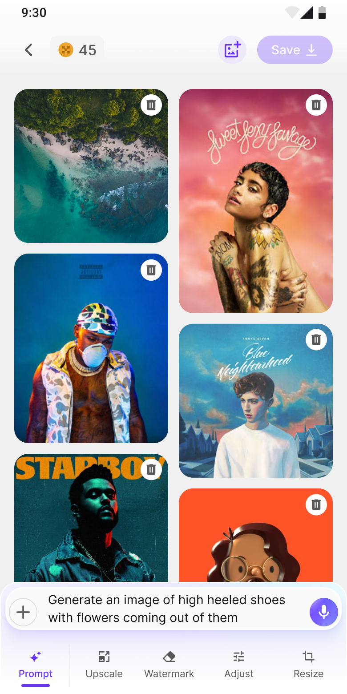


The Design Decision
The image grid shows 2 columns — enough to see the batch without scrolling endlessly. The prompt bar sits at the bottom (thumb zone), same as the home screen — consistent interaction model. Tool panels slide up as bottom sheets, same as the single-image editor. The user already knows how to use every tool because they learned the pattern once.
The Other Paradigm
Edit by
Describing
The flows above use a tool-first model: choose a tool, adjust settings, apply. But some edits don't map to a specific tool. "Make this look warmer." "Remove the person in the background." "Add a gradient to the sky."
Upload + Chat lets users skip the tool palette entirely. Upload an image, describe what you want in natural language, see the result. Describe another change. Iterate. The editing history stays visible as a conversation — each prompt and its result stacked chronologically.
The image stays visible while typing — the keyboard overlaps the input area over the canvas without shrinking it. Multi-turn editing with full history preservation. Closer to talking to an AI assistant than using a photo editor.


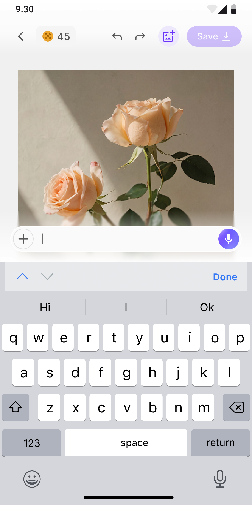
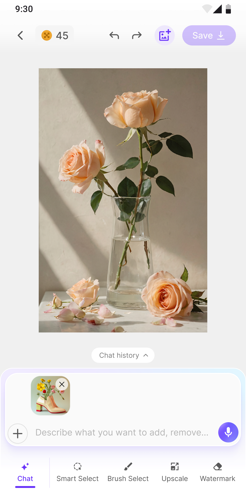
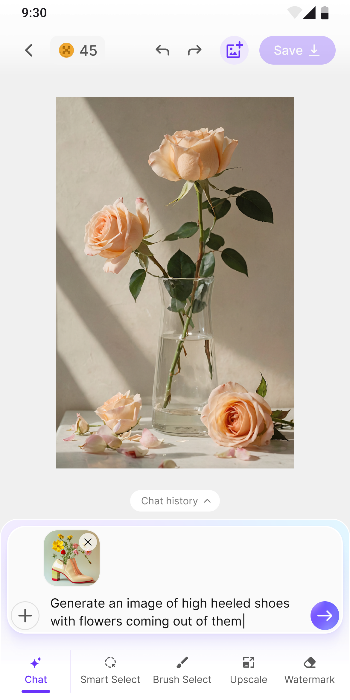
The System
Ten Flows.
One Creative
Loop.
Every flow in the app connects to a single creative loop: discover what to make, create it, review it, share it. The numbered flows above show each screen in isolation. This diagram shows how they fit together as a system.
Home
Prompt bar + tool cards
AI Tools
10 tools, hierarchical grid
Image Gen
Text → image
AI Editor
6 tools, 1 pattern
Video Gen
Background processing
Batch
Up to 50 images
Gallery
All creations + re-edit
Explore
Discovery loop
Pricing
Monetisation layer
Profile
Account + settings

Honest Assessment
What Didn't
Work
V2V2's coin system confused users. Credits felt like a game mechanic, not a payment model. Users expected subscription pricing — they didn't understand why editing an image "cost" coins. The signal came from the usage data: users were completing edits but abandoning at the credit-deduction moment. They understood the tool but not the cost.
The coin system wasn't a quick experiment — it was a structural assumption baked into the navigation, pricing screens, and credit bar component. It lived for one full version cycle. V3 softened the language but kept the model. V4 replaced it entirely with straightforward monthly and weekly plans. Unwinding the coin metaphor required redesigning every screen that referenced credits.
V3V3's onboarding had too many steps. Five carousel cards. By step 3, users were swiping past without reading. The content was accurate but the format was wrong — nobody reads five screens of text before using an app. V4 cut it to 3 cards, each showing one capability with a single visual. No text walls.
V4V4's prompt-first Home launched without suggestion pills. The prompt bar was the primary UI, but users who didn't know what to type stared at an empty input box. The blank prompt is the blank canvas problem all over again. Adding pre-written suggestion pills below the prompt ("Remove background," "Generate product photo," "Turn image into video") gave hesitant users a starting point without cluttering the interface for power users.
The Ice Breaker
What happens when the
user has no prompt?
A prompt bar alone loses first-time users. They open the app, see a blinking cursor, and leave. The Home screen can't assume intent — it has to create it.
"Half the population in rich countries is not articulate enough to get good results from current AI." — Jakob Nielsen, NN/g 2023
Annotations listed here ↓
Intent-first, not tool-first. The heading asks what the user wants — not which tool to use. Credits badge and Go Pro sit in the top bar — monetisation visible but never blocking creation.
Natural language as primary input. Users describe what they want instead of picking tools. The + button uploads images into the prompt context. The sparkle enhances vague prompts using AI.
Progressive Disclosure — Nielsen, NN/g 2006
Before/after thumbnails for users who know the task but can't describe it. Tap the transformation, skip the typing.
Hick's Law — Hick & Hyman, 1952
Large visual cards showing AI outputs — not feature lists. The user sees what's possible before deciding what to make.
Empty State Design — Kaplan, NN/g 2021
Pre-written prompt examples. Users learn AI interaction by seeing real prompts. The fix for the V4 blank-canvas failure.
Recognition Over Recall — Budiu, NN/g 2024
Users who came for images discover video generation without navigating away. Cross-selling within context.
Viral AI effects — Baby Face, Ghibli, Sticker Generator. Low-commitment entry points riding cultural trends.
Category-driven discovery — Product shots, Social media, Ad creatives. Users find their use case, not a tool.
Five tabs, five intents. The floating ✦ button is visible on every tab — creation is a global action, not a destination.
Paradox of the Active User — Carroll & Rosson, IBM 1987
The Home Screen · Full Scroll

Users weren't comparing.
They were deciding.
We watched 50 session recordings in Microsoft Clarity. The pattern was immediate: users scroll through the entire Home screen, stop at the prompt bar, and either type or leave.
Nobody browsed tools first. Nobody opened settings. The prompt bar was the decision point — everything above it was context, everything below it was discovery.

Clarity · Session recordings · Real user behaviour
The numbers confirmed
the design works.
92.94% scroll depth means users reach the bottom — the thumb zone layout holds attention. 0.60% rage clicks means the interaction model is clear. 0% excessive scrolling means the content density is right.
4.8 minutes average active time on a mobile app where the average session is 72 seconds. Users aren't just visiting — they're creating.

Clarity · Dashboard · 8,891 sessions · Last 200 days
1 / 3 · Above the fold

2 / 3 · Mid-scroll

3 / 3 · Bottom scroll

Microsoft Clarity · Live interaction data · PixelBin Home Screen
The Impact
132% Growth
in 30 Days
Landing page sessions grew from 4,556 to 10,567 daily unique sessions in a single 30-day period — a 132% increase. Product-led growth drives 96% of revenue. The design isn't just usable. It converts.

Geckoboard → Unique sessions on landing pages → Last 30 days
What If You Could
See What Others
Are Creating?
Explore
The Problem
Users who don't know what to create need inspiration. Users who don't know how to prompt need examples. A discovery feed solves both — showing real generations from other users, with the prompts visible and copyable.


The Design Decision
"Explore" is a primary tab — equal to Home, AI Tools, and Gallery. Making discovery a first-class destination means users who don't know what to create always have somewhere to go. The category filters (Photorealistic, Digital art, Surreal, Anime) let users browse by style, not by tool.
Where Do All
Your Creations Go?
Gallery
The Problem
Users generate dozens of images and videos across sessions. Without a dedicated gallery, their work gets lost in the phone's camera roll — mixed with screenshots, selfies, and WhatsApp downloads. The gallery needs to feel like a creative portfolio, not a file manager.
The Design Decision
All/Images/Videos tabs at the top provide instant filtering. The grid layout matches the Explore feed — consistent visual language. Tapping any creation shows the original prompt and generation settings, so users can regenerate or modify their past work.
How Do You Make
Someone Pay for AI
on Their Phone?
Pricing
The Problem
Mobile subscription pricing has different psychology than desktop. Users are used to weekly/monthly app subscriptions. The pricing tiers need to feel fair, the value needs to be obvious, and the checkout needs to work with Apple/Google payment flows.
The Design Decision
Three tiers: Monthly ($11.99), Weekly ($6.99), and Pay as you go ($10.99). The weekly option lowers the commitment barrier — users can try for a week before committing to monthly. "Pay as you go" serves heavy users who prefer credit-based pricing. The plan comparison is a single scrollable card, not a feature matrix — mobile users don't compare columns.
What Happens After
Someone Subscribes?
Profile & Settings
The Problem
The profile isn't just settings — it's where users manage their plan, check their credits, and decide whether to stay. A confusing profile increases churn. A clear profile builds confidence.
The Design Decision
The profile is organized by user intent: "What plan am I on?" → My Plan. "What's my account?" → Account Details. "How do I adjust?" → Settings. "I need help" → Help. Social links at the bottom connect the app to the broader PixelBin community. Delete Account is accessible but not prominent — honest and transparent without encouraging churn.
Design Principle
Show what AI does.
Not how it works.
"Explain the benefit, not the technology" — Google PAIR, People + AI Guidebook
What I Learned
The Hardest
Part
The hardest part of mobile design isn't the small screen. It's accepting that every interaction you love on desktop has to be redesigned or killed. Hover states, sidebars, multi-window workflows, keyboard shortcuts — none of them survive the transition. What survives is the intent behind them. The sidebar becomes a bottom sheet. The keyboard shortcut becomes a suggestion pill. The multi-window workflow becomes background processing with a push notification.
The designer's job isn't to shrink the desktop. It's to find the mobile-native expression of the same idea.
Three versions. 10 flows. 67 screens.
Every interaction redesigned for thumbs.
What I'd do differently
Move intent detection into onboarding. The suggestion pills already route users to the right tool — "Remove background" opens the editor, "Generate product photo" opens the generator. But they appear after onboarding, not during it. Asking "What do you want to create?" on the first screen would let the Home screen pre-configure around the user's goal. The routing logic exists. The sequencing doesn't.